Revisão Geral
Desmontagem, limpeza, lubrificação e regulagem total. A bike volta rodando redonda do guidão ao cubo.
- Desmontagem e limpeza peça a peça
- Rolamentos revisados e lubrificados
- Ajuste de câmbio, freio e aperto geral
Revisões completas, regulagens precisas e limpeza detalhada. Atendimento com agendamento rápido.
Cada serviço tem começo, meio e fim explicados antes de você deixar a bike aqui. Escolha o que precisa e peça o orçamento direto.
Desmontagem, limpeza, lubrificação e regulagem total. A bike volta rodando redonda do guidão ao cubo.
Ajuste fino, troca de cabos e pastilhas. Passagem de marcha sem barulho e freio que morde na hora certa.
Giro limpo e corrente como nova. Desengraxe completo da transmissão e lubrificação na medida certa.
Instalação de peças novas e acessórios. Do guidão ao bagageiro, montado com torque e alinhamento corretos.
Não achou o que precisa? Manda uma foto do problema no direct do Instagram que a gente te responde com o que dá pra fazer.
Nada de foto de catálogo: é bike de cliente, do jeito que chegou e do jeito que saiu. O acervo completo fica no Instagram.
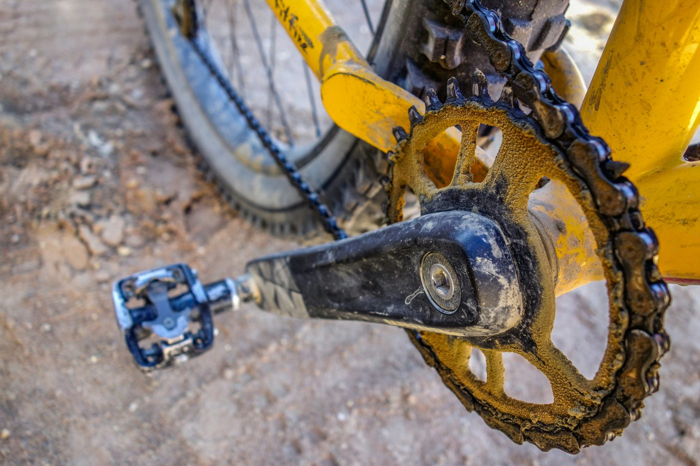
Antes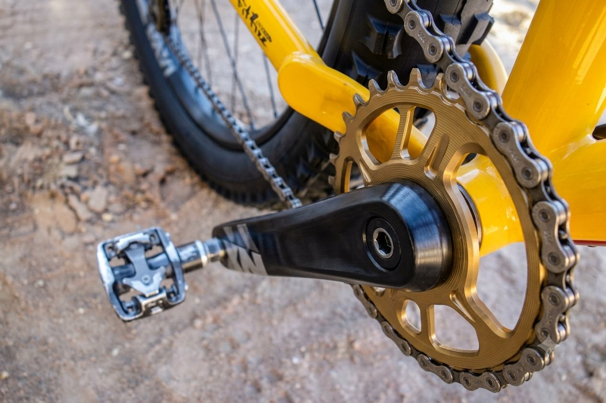
Depois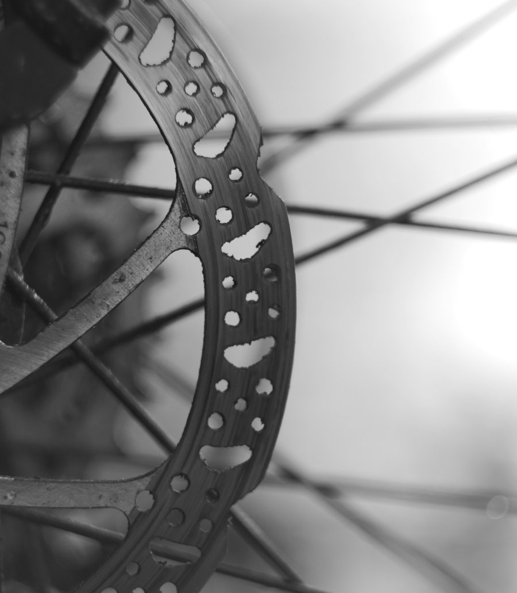
Antes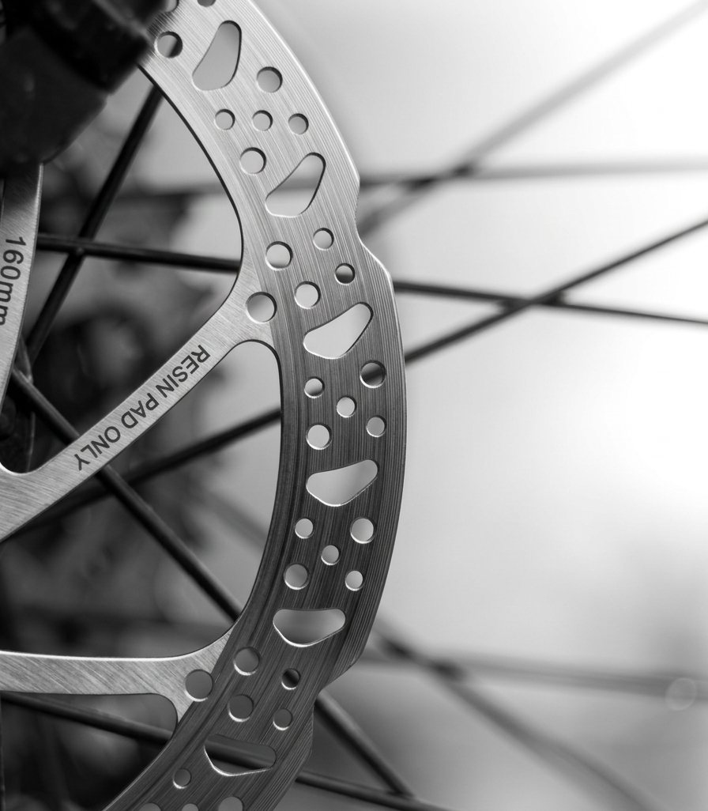
Depois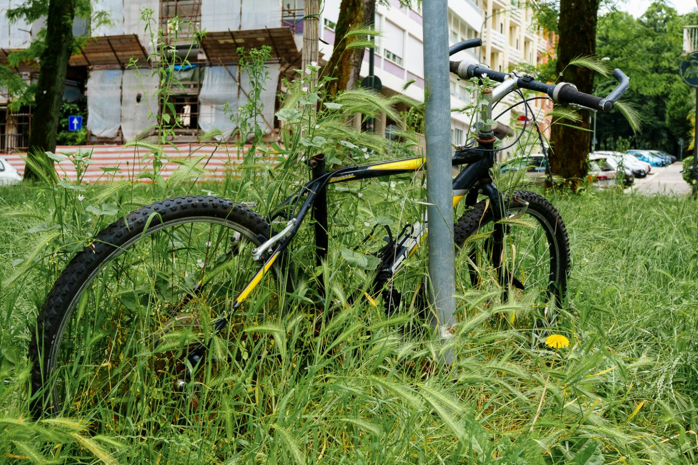
Antes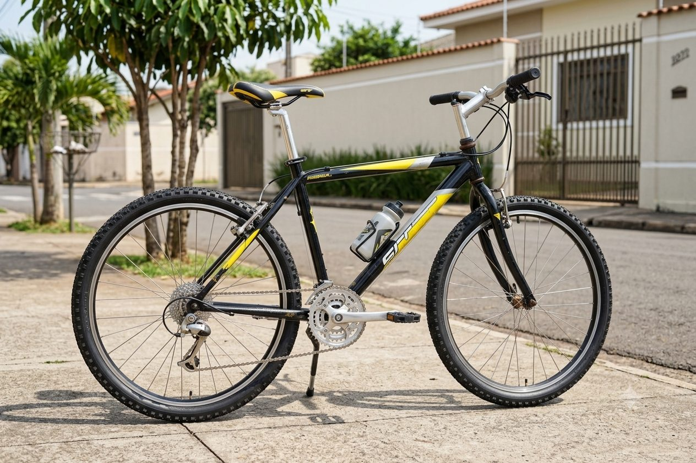
Depois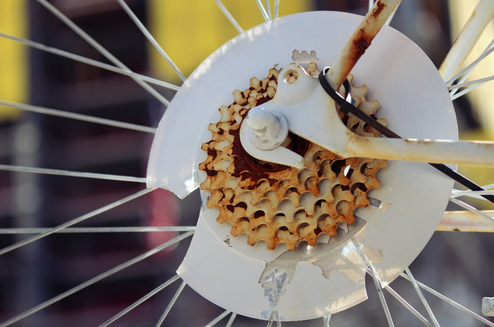
Antes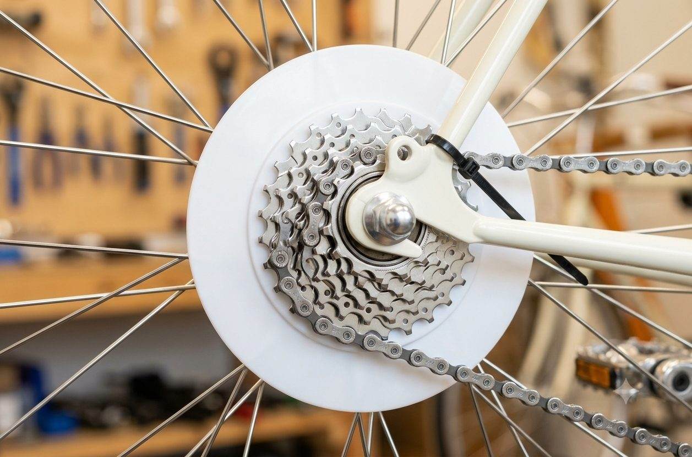
Depois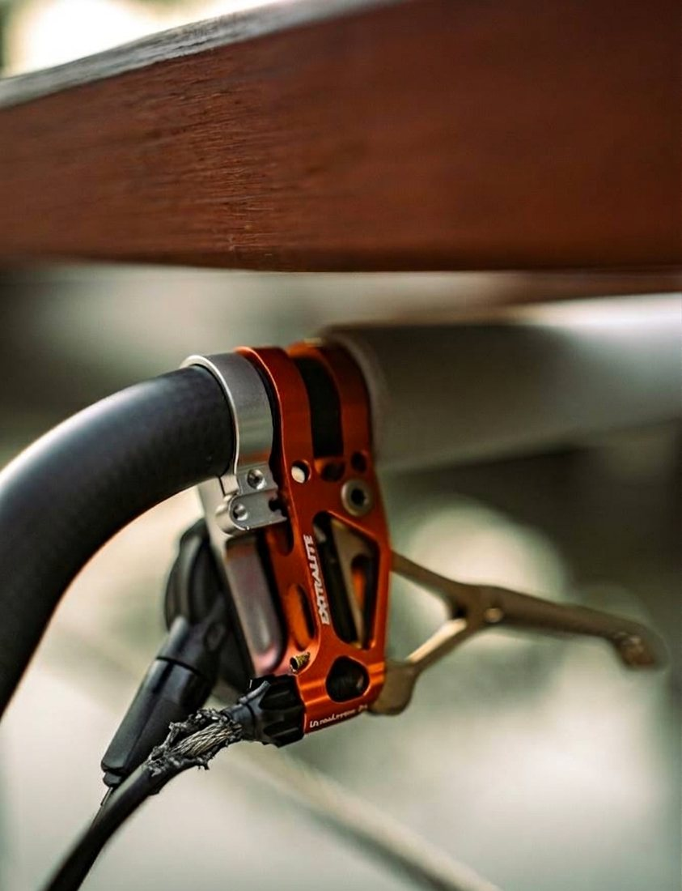
Antes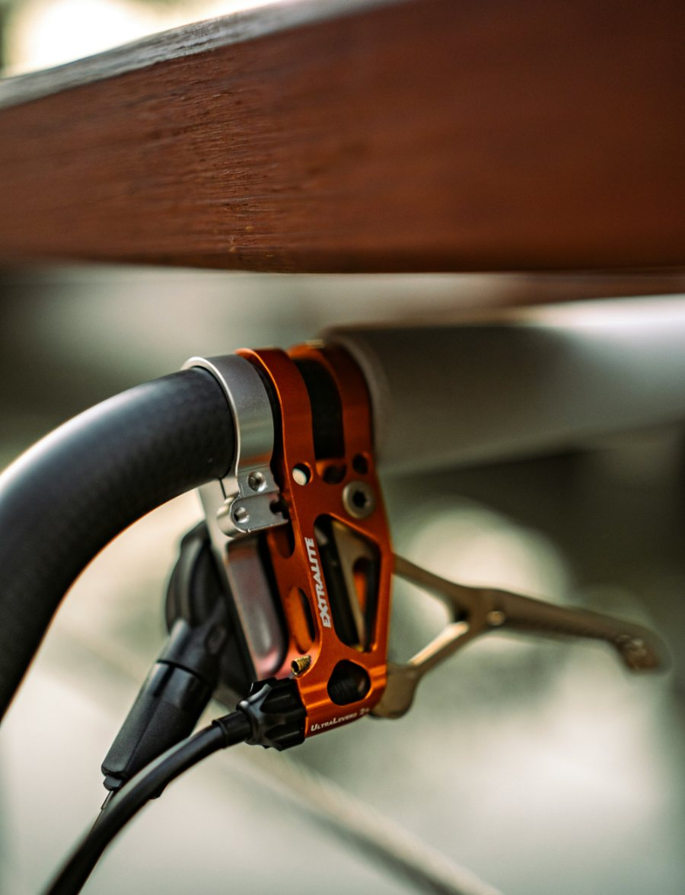
Depois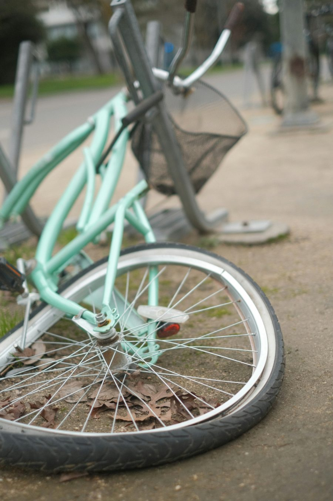
Antes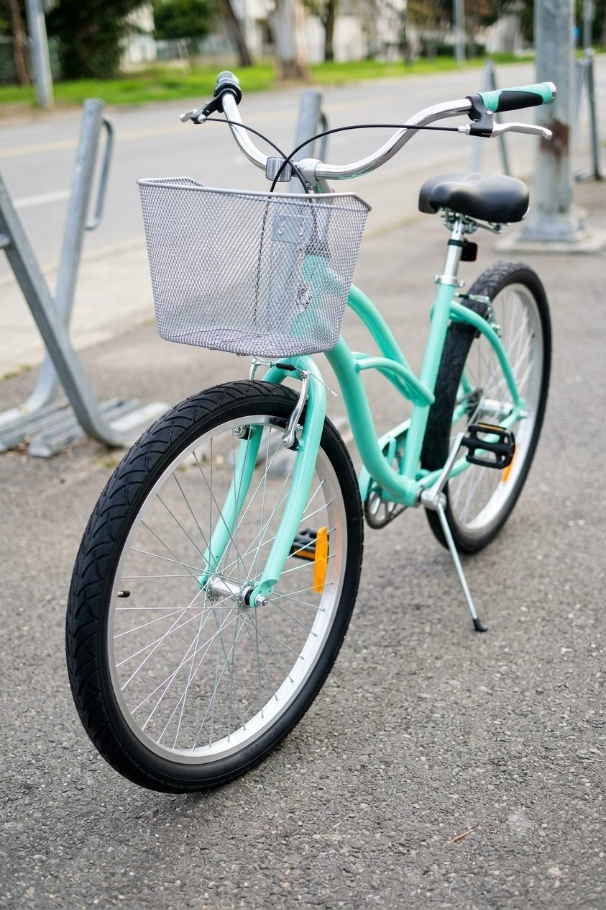
DepoisSem balcão, sem vendedor empurrando peça. Você fala direto com quem vai colocar a mão na sua bike.
Você sabe exatamente o que foi trocado. Peça velha devolvida na mão e explicação do porquê da troca.
Hora marcada de verdade. A bike entra na bancada no horário combinado e você recebe aviso quando fica pronta.
Paixão e cuidado com cada parafuso. Quem monta aqui pedala também e sabe o que incomoda na trilha e no asfalto.
Sem taxas abusivas de loja grande. Orçamento fechado antes do serviço começar, sem surpresa na entrega.
Sim, e é rápido. Como a oficina é de garagem, a bancada atende uma bike por vez. Chama no direct do Instagram, conta o que está acontecendo e já marcamos o dia e a hora de deixar a bike.
MTB, speed, urbana, gravel, infantil e dobrável. Freio a disco mecânico e hidráulico, V-brake, transmissão de 1x até 3x. Bike elétrica a gente atende na parte mecânica: transmissão, freios, rodas e regulagens.
Regulagem de câmbio e freio costuma sair no mesmo dia. Revisão geral com desmontagem leva mais tempo, e o prazo exato é combinado no orçamento, antes de começar. Se depender de peça encomendada, avisamos na hora.
Uma ideia inicial sai pelo direct do Instagram com foto e descrição. O valor fechado sai depois da checagem na bancada, e nada é trocado sem o seu ok.
Pode. A gente cobra só a mão de obra da instalação e te avisa antes se a peça não for compatível com a sua bike.
Manda uma mensagem no direct contando o que está acontecendo. Se puder, mande também uma foto da parte com problema.